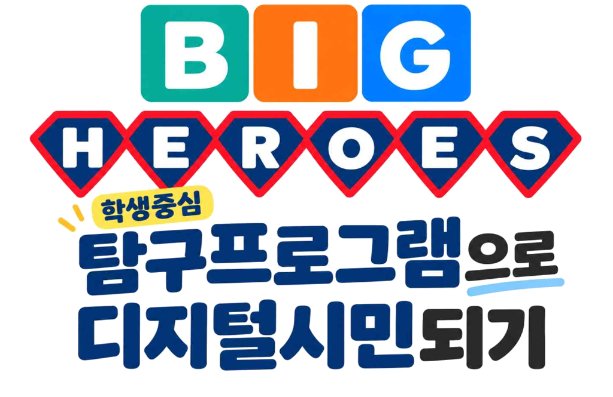

디지털 도구의 단순 기능 학습을 넘어, 학생 스스로 디지털 생활을 판단하고 성찰하는 기준을 탐구하여
비판적으로 이해하고, 창의적으로 표현하며, 함께 참여하고 실천하는 따뜻한 디지털시민으로 성장합니다.
학생들의 주도적인 탐구 & 실천 모습
디벗 활용, 정보 신호등 판별, 저작권 자화상, AI 건강 토론, 학교 캠페인까지 함께한 순간들입니다.
왜 ‘기준을 탐구하는’ 학생중심 프로그램인가?
단순히 에듀테크 도구를 사용하는 것을 넘어, 정보와 디지털 환경을 스스로 판단하고 책임 있게 행동하는 디지털시민을 길러냅니다.
도구 기능 중심의 활용
-
도구 중심의 한계 : 디지털 도구 사용만으로는 역량이 저절로 길러지지 않음
-
수동적 정보 수용 : 알고리즘 추천이나 검색 결과를 비판 없이 그대로 수용함
-
산출물 위주 활동 : 카드뉴스·PPT 완성에 치우쳐 실천 과정의 평가가 부족함
-
일회성 실천 그침 : 일회성 활동에 머물러 실제 생활과 온전한 성찰로 이어지지 못함
핵심 전환
디지털시민성 기준 자체를 직접 탐구
-
개념 기반 탐구 : 디지털시민성 요소 자체를 탐구 개념으로 설정
-
판단 기준 수립 : '정보 신호등', '출처 카드' 등 스스로 판단하는 기준 도출
-
점진적 주도성 : 교사의 안내는 점차 줄이고 학생의 선택과 실천을 확장 (GRR)
-
순환적 실천·성찰 : 삶과 연결 → 탐구 → 생활성찰 → 실천 → 피드백 → 확산
본 프로그램이 지향하는 4대 디지털시민 역량
UNESCO DKAP, Ribble(2015), Common Sense, 2022 개정 교육과정 및 서울시 AI·디지털 리터러시 내용체계를 재구성
디지털 리터러시 역량
디지털 정보와 미디어를 무비판적으로 수용하지 않고, 출처와 근거를 확인하여 신뢰성과 타당성을 올바르게 판단함
디지털 창의·혁신 역량
디지털 환경에서 자신의 생각을 새롭게 표현하되, 저작권과 타인의 권리를 존중하며 책임 있는 재창작(리믹스)을 실천함
디지털 정서 역량
온라인 공간에서 자신의 감정을 알아차리고 조절하며, 상대방의 마음을 배려하고 공감하는 언어 습관을 실천함
디지털 참여 역량
디지털 공동체의 문제를 외면하지 않고 공정하게 참여하며, 약자를 지키는 업스탠더로서 함께 해결책을 실천함
두 개의 축으로 확장되는 학생 주도성 (GRR 모형 접목)
단순 활동이 아닌, 교사의 비계는 점차 줄어들고 학생 스스로 판단하고 행동하는 주도성이 단계와 학년을 거쳐 넓어집니다.
프로그램 단계별 주도성 확장
교사가 실제 사례와 상황을 제시하며 탐구의 출발을 안내
학생 스스로 가설을 세우고 다양한 자료를 탐색·비교하며 개념 도출
구성한 개념을 바탕으로 나의 디지털 생활을 성찰하고 실천 원칙 수립
학생이 스스로 세운 기준으로 실천하고 피드백을 주고받으며 공동체로 확장!
학년별 발달단계에 따른 탐구 범위 확장
교사의 안내에 따라 자신의 경험을 살펴보고 기초적인 규칙 실천
친구와 질문과 자료를 나누며 신뢰성 있는 출처를 찾고 공유
스스로 기준을 세워 자료를 선택하고 저작권 지킨 창작물 제작
AI 활용 기준 정립, 공동체 문제 발견 및 전교생 캠페인을 주도적으로 기획
BIG 내용체계 & HEROES 6단계 탐구 절차
무엇을 배울 것인가(BIG)와 어떻게 탐구할 것인가(HEROES)가 유기적으로 맞물려 있습니다.
분별하는 디지털시민
디지털 리터러시디지털 정보와 미디어를 비판적으로 이해하고 올바르게 판단하며, 타인에게 미치는 영향을 고려하여 책임 있게 행동합니다.
핵심 개념 & 탐구 주제
창의적인 디지털시민
디지털 창의·혁신새로운 아이디어를 창의적으로 표현하고 문제를 해결하며, 타인의 저작권과 권리를 존중하며 피드백으로 발전시킵니다.
핵심 개념 & 탐구 주제
참여하는 디지털시민
디지털 정서 & 참여디지털 공동체의 문제에 관심을 갖고 책임 있게 참여하며, 상대방을 존중하고 갈등을 조정하며 건강한 소통 문화를 만듭니다.
핵심 개념 & 탐구 주제
디지털 생활의 생생한 사례와 경험을 살펴보고, 스스로 탐구 질문을 발견하며 계획을 수립합니다.
다양한 자료와 실험(대조검색, 출처 비교 등)을 통해 핵심 개념의 의미를 분석하고 스스로 규칙을 구성합니다.
구성한 개념과 기준을 거울삼아 자신의 과거 디지털 행동을 정직하게 성찰하고 구체적 실천 원칙을 세웁니다.
세운 원칙을 바탕으로 실제 창작 및 실천 활동에 적용하고 점검할 평가 기준을 마련합니다.
스스로 세운 평가 기준에 맞춰 자기·동료 평가를 진행하고, 따뜻한 피드백을 통해 결과물을 수정·보완합니다.
탐구 전후 자신의 생각과 태도 변화를 성찰하고, 가정과 학교 전체, 지역사회로 실천 경험을 널리 확산합니다.
학년별 발달단계에 맞춘 생생한 수업 실천 사례
서울윤중초등학교 교실에서 펼쳐진 2학년부터 5학년까지의 실제 수업 과정과 아이들의 목소리를 확인하세요.
달라지는 검색창, 나만의 검색어 찾기
"같은 궁금증도 검색어를 다르게 쓰면 결과가 달라질까?"
주요 탐구 및 실천 내용
- 대조 실험 : 넓은 검색어(예: 햄스터) vs 구체적 검색어(예: 햄스터 키우는 안전한 방법) 비교 탐구
- 개념 구성 : "궁금한 대상과 알고 싶은 내용을 함께 쓰면 원하는 정보가 잘 나온다!"
- 실천 산출물 : 나만의 검색 규칙을 적용한 [반려동물 안전수첩] 카드 제작 및 패들렛 갤러리워크
"‘햄스터’라고만 쳤을 땐 장난감 광고만 잔뜩 나와서 당황했는데, ‘햄스터 안전하게 키우는 법’으로 검색하니 꼭 필요한 정보가 쏙 나왔어요!" - 2학년 정OO 학생
알게 된 곳은 또렷하게, 내 글은 믿음직하게
"믿을 수 있는 정보를 골라 자료를 만들 때, 무엇을 어떻게 밝혀야 할까?"
주요 탐구 및 실천 내용
- 출처 보물찾기 : 교과서와 믿을 수 있는 누리집에서 출처 표기 공통점 찾아내기
- 정보 신호등 놀이 : 누가 만들었나? 언제 만들었나? 다른 곳에도 나오나? 3가지 질문으로 검증
- 실천 산출물 : 출처 이름표를 정직하게 붙인 [세시풍속 소개카드] 캔바 제작 및 QR코드 전시
"이 블로그는 작성자가 안 나와서 노란불이에요. 국립민속박물관 사이트는 어디서 온 정보인지 명확하니까 초록불이에요!" - 3학년 학생
내 생각은 새롭게, 권리는 소중하게
"다른 사람의 그림을 활용한 창작은 어디까지 허용될까?"
주요 탐구 및 실천 내용
- 허락과 출처의 차이 탐구 : 출처만 쓰면 무조건 써도 되는가? CCL(이용허락조건) 심층 분석
- 생활 성찰 : 과거 숙제나 발표자료를 만들 때 남의 그림을 무단 사용했는지 정보 신호등으로 반성
- 실천 산출물 : 명화 이용 조건을 준수하여 나만의 특징을 더한 [디지털 자화상] 제작 및 전교 캠페인 포스터
"출처만 밝히면 다 되는 줄 알았는데, 먼저 ‘사용해도 되는지(이용 허락)’ 확인해야 한다는 걸 깨달았어요." - 4학년 김OO 학생
리믹스로 새롭게, 권리는 지켜서
"다른 사람의 작품을 바꾸어 만든 것은 언제 새로운 창작이 될까?"
주요 탐구 및 실천 내용
- 창작 vs 표절 구분 : 변형의 정도와 새로운 가치 창출, 저작자 표시 조건 탐구
- 실천 원칙 : "나는 원작의 이용 조건을 확인하고 나의 생각을 더해 표현하겠다"
- 실천 산출물 : 저작권 조건을 준수한 학교 행사 홍보물 리믹스 및 저학년을 위한 출처 가이드 제작
"남의 것을 그대로 베끼는 것보다 내 생각을 더하니 진짜 내 작품 같아서 뿌듯했고, 제 작품에도 이용 허락 표시를 붙였어요!" - 5학년 박OO 학생
작은 목소리를 모아, 함께 바꾸는 우리
"디지털로 함께 행동하면 우리 공동체를 어떻게 바꿀 수 있을까?"
주요 탐구 및 실천 내용
- 방관자에서 업스탠더(Upstander)로 : 온라인 괴롭힘과 불편을 외면하지 않고 참여하는 방법 탐구
- 참여 원칙 : 누구도 탓하지 않고, 신뢰할 수 있는 정보로, 모두가 참여하는 방법 열기
- 실천 산출물 : 전교생 대상 「작은 시민, 큰 변화」 디지털 캠페인 및 인증 챌린지 주도
"불편한 게 있어도 그냥 참았는데, 디지털로 함께 알리니 우리 반과 학교 전체가 바뀔 수 있다는 것을 알았어요!" - 5학년 김OO 학생
AI와 함께 건강을 지키는 법 (인체와 생성형 AI)
"우리 몸과 건강에 관한 AI 답변을 어떻게 비판적으로 활용할까?"
주요 탐구 및 실천 내용
- AI 답변 vs 과학 교과서 대조 : 인체 소화·순환 기관 AI 답변의 오류와 환각(Hallucination) 검증
- 역할 분담 원칙 : "AI는 아이디어와 정보를 제안하고, 최종 판단과 책임은 사람이 진다"
- 실천 산출물 : 우리 반만의 사람-AI 건강한 관계 원칙 수립 및 건강 정보 판별 가이드 제작
"AI가 말해준다고 다 정답이 아니었어요. 과학책과 비교해서 스스로 판단해야 진짜 안전한 지식이 된다는 걸 배웠습니다." - 5학년 박OO 학생
데이터로 증명된 디지털시민 역량의 성장
2~5학년 78명을 대상으로 한 사전-사후 검사(t-검정) 결과와 학교 안팎의 확산 성과입니다.
모든 영역에서 통계적으로 유의미한 성장 (p < .001)
단순히 기기를 다루는 기능 수준을 넘어, 정보 판별과 윤리적 판단, 감정 조절 및 협력적 참여 역량이 전 학년에 걸쳐 뚜렷하게 신장되었습니다.
사전 vs 사후 역량 비교 (5점 만점)
사전 사후* 2~5학년 총 78명 대상 대응표본 t-검정 실시 결과
교원과 함께 넓히기
- 학년별 씨앗교사 : 수업 자료 사전 안내 및 동학년 적용 점검
- 교원학습공동체 : 격주 협의로 루브릭 수정 및 수업 나눔
- 학교 안 직무연수 : 2026 남부 윤중초 학생중심 탐구수업(20시간)
- 학습키트 디지털 아카이브 : 지도안·활동지·루브릭 공유
학생과 함께 키우기
- BIG HEROES 축제 : 학년 내 체험부스 & 전교생 디지털 축제 연계
- 디지털시민 캠페인 : 「작은 시민, 큰 변화」 학생 자치 기획
- 학교 게시판 전시 : 1차 산출물과 재표현물 나란히 비교 전시
- 온라인 갤러리 : 패들렛 연동 QR코드로 전교생 소통 답글
학교 밖으로 나누기
- 컨설팅 공개수업 3회 : 사전-사후 협의로 지속적 수업 개선
- 2026 AI·디지털 러닝 콘페스타(마곡) : 운영 성과 발표 (7.24~25)
- 다더함 교육활동 전시 : 2차례 타교 교원 대상 수업 사례 출품
- 자체 홈페이지 & QR 아카이브 : 누구나 내려받는 자료 공유
BIG HEROES 수업·탐구 학습자료 드라이브
학생들의 탐구활동지와 교수·학습 과정안 등 모든 학습자료를 구글 드라이브에서 간편하게 확인하고 내려받으실 수 있습니다.
학생 탐구활동지 및 수업 자료집 모음
• 학년별 교수·학습 지도안 및 차시별 탐구 수업 전략
• 정보 신호등 판별지, 출처 이름표 양식, 저작권 자화상 제작 키트 등 학생 활동지
• 과정중심 평가 루브릭 및 학생 산출물 갤러리 원본 자료 수록
응원과 소통 한마디 롤링페이퍼
연구를 살펴보신 소감이나 따뜻한 응원의 메시지를 자유롭게 남겨주세요.